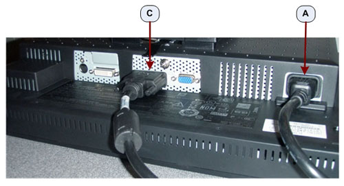
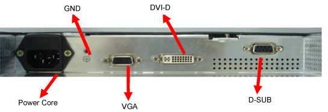

Illustration 1: NEC 1990SXi LCD Display / Image Monitor Connections

| NOTE: | Do not use OEM Manufacturer’s supplied video cables. |
Illustration 1: NEC 1990SXi LCD Display / Image Monitor Connections
Illustration 2: NEC 1990SXi LCD Prescription / Scan Monitor Connections

Table 1: NEC Monitor Connections
| A | Power Cable Connection |
| B | SVGA Video Connection - Display / Image Monitor (right) |
| C | DVI-A Video Connection - Prescription / Scan Monitor (left |
Illustration 3: EIZO S1921-X / S1923-H LCD Display / Image Monitor Connections

Illustration 4: EIZO S1921-X / S1923-H LCD Prescription / Scan Monitor Connections

Table 2: EIZO Monitor Connections
| A | Power Cable Connection |
| B | D-Sub Video Connection - Display / Image Monitor (right) |
| C | DVI-D Video Connection - Prescription / Scan Monitor (left) |
Illustration 5: Bigtide HL1916 LCD

Table 3: Bigtide Monitor Connections
| Power Cable Connection |
| VGA Video Connection - Display / Image Monitor (right) |
| DVI-D Video Connection - Prescription / Scan Monitor (left) |